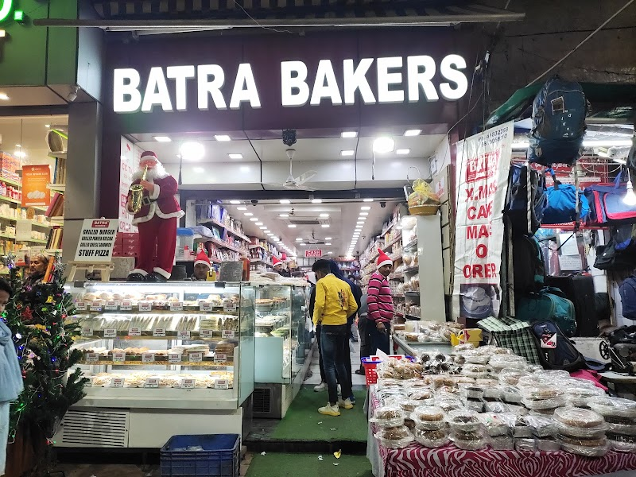

Batra Bakers is a well-known bakery in Malviya Nagar, especially popular among local residents for its fresh cakes, pastries, breads, and bakery essentials. Regular customers often return for chocolate pastries, birthday cakes, rusks, and snacks like sandwiches and bread pizza. The shop has a familiar neighborhood feel and also stocks packaged snacks and cake decoration items.
Contact and location
- Address
- Shop No. 24, Old Market, Malviya Nagar, New Delhi, Delhi 110017, India
- Phone
- +91 98100 56210
More food & cafes nearby
- KFCChicken restaurant
- DosaZZVegetarian restaurant
- New Moti Chat BhandarRestaurant
- Olipo cafe & Best coffee cafe in malviya nagarCafe